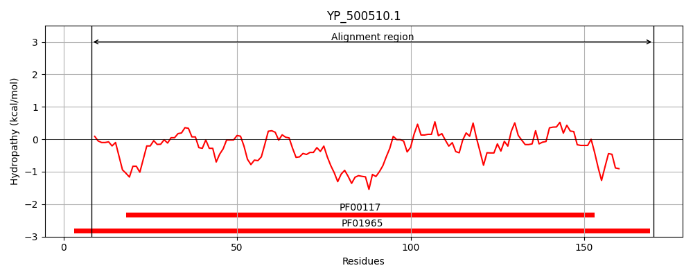
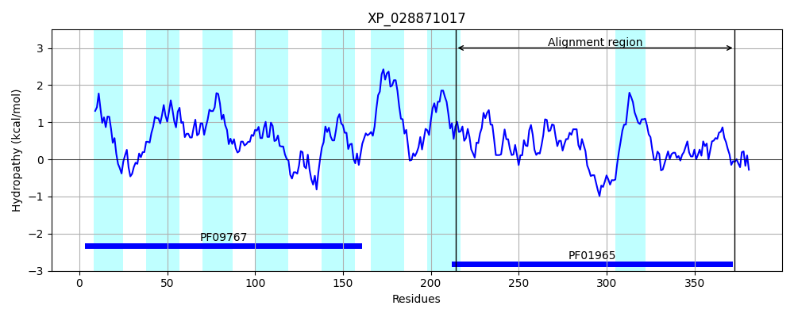
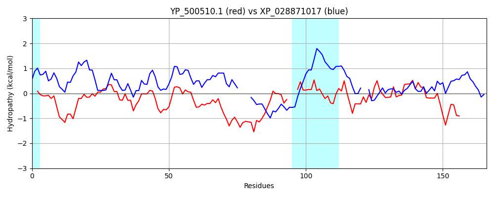

Hit Accession: XP_028871017
Hit TCID: 8.A.145.1.5
Hit Description: gnl|BL_ORD_ID|22683 gnl|TC-DB|XP_028871017.1|8.A.145.1.5 Protein DJ-1 -like protein B [Babesia sp. Xinjiang]
Mach Len: 166
e:0.000000
Query TMS Count : 0
Hit TMS Count: 8
TMS-Overlap Score: 0.000000
Predicted Substrates:None
BLAST Alignment:
Score: 129 , Bit scores: 54 bits, E-value: 3.2e-09, Alignment length: 166, Percentage identity: 27
Query: 8 ILANEFEDIEYSSPKEALENAGFNTVVIGDTANSEVVGKHGEKVTVDVGIAEAKPEDYDALLIPGGFSPDHLRGDTEGRYGTFAKYFTKNDVPT---FAICHGPQILIDTDDLKGRTLTAVLNVRKDLSNAGAHVVDESVVVDNNIVTSRVPDDLDDFNREIVKQL 170
+LAN EDIE+ + + L AG V ++ +VV HG K+ DV I E E +D +++PGG + + T K + AIC P ++ + + AV +A V V V VTS+ P +F ++V+ L
Sbjct: 214 MLANGSEDIEFVTVVDVLRRAGVTVTVASVHSHKDVVMAHGTKIVSDVVIDEVSSETFDLIVVPGGLPGSNSCAEC----ATLIKMLNEQKDGNRYYAAICAAPAVVFAAGGILDKETAAV--AYPGFEDALPKVGSGRVCVSGKCVTSKAPGTAMEFALKLVELL 373 | Protein Hydropathy Plots: |
|---|
|  |  |
Pairwise Alignment-Hydropathy Plot:
|
|---|
|  |